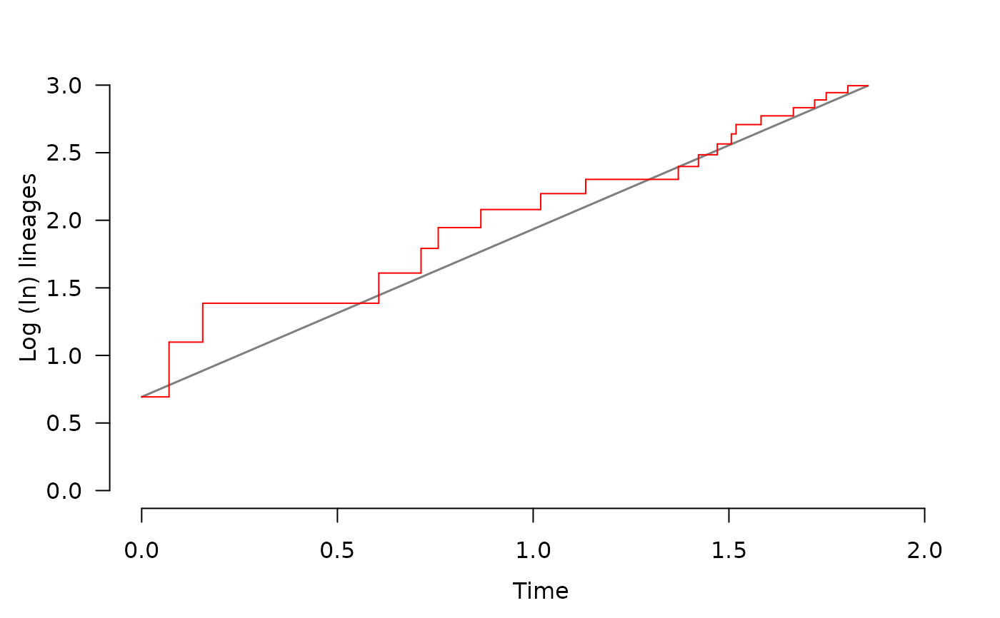

lttPlot plots the lineage through time (LTT) of a phylo object.
It also adds a reference line connecting the edges of the graph.
Usage
lttPlot(
phy,
lwd = 1,
col = "red",
plot = TRUE,
rel.time = FALSE,
add = FALSE,
knitr = FALSE
)Arguments
- phy
A
phyloobject, as specified by theapepackage.- lwd
Line width.
- col
Line color.
- plot
A
logicalindicating with calculations should be plotted. IfFALSE, function returns a list of the calculated points.- rel.time
A
logicalindicating how the time scale should be shown. IfFALSE(default), plots the absolute time sincephy's crown age. IfTRUE, plots time as a relative proportion between crown age and furthest tip from root.- add
A
logicalindicating if plot should be added to pre-existing plot. Default isFALSE.- knitr
Logical indicating if plot is intended to show up in RMarkdown files made by the
KnitrR package.
Value
Plots the sum of alive lineages per point in time, and adds a red
line as a reference of expectation under pure birth. If plot = FALSE,
a list the richness of each point in time, and phy's crown age.
References
Paradis, E. (2012). Analysis of Phylogenetics and Evolution with R (Vol. 2). New York: Springer.
Examples
S <- 1
E <- 0
set.seed(1)
phy <- simulateTree(pars = c(S, E), max.taxa = 20, max.t = 5)
lttPlot(phy, knitr = TRUE)

lttPlot(phy, plot = FALSE, knitr = TRUE)
#> $ldata
#> stime lineages
#> [1,] 0.00000000 0.6931472
#> [2,] 0.06989763 1.0986123
#> [3,] 0.15597366 1.3862944
#> [4,] 0.60566076 1.6094379
#> [5,] 0.71359732 1.7917595
#> [6,] 0.75750071 1.9459101
#> [7,] 0.86636212 2.0794415
#> [8,] 1.01919949 2.1972246
#> [9,] 1.13422660 2.3025851
#> [10,] 1.37067812 2.3978953
#> [11,] 1.42212044 2.4849066
#> [12,] 1.47034648 2.5649494
#> [13,] 1.50608706 2.6390573
#> [14,] 1.51820710 2.7080502
#> [15,] 1.58208936 2.7725887
#> [16,] 1.66461861 2.8332133
#> [17,] 1.71894482 2.8903718
#> [18,] 1.74853490 2.9444390
#> [19,] 1.80376852 2.9957323
#>
#> $age
#> [1] 1.855181
#>